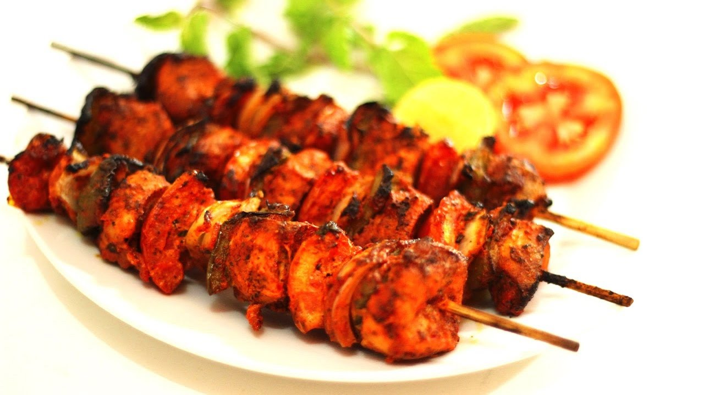
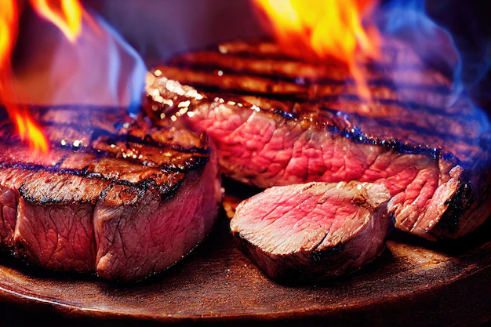
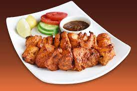

Tikka-Boti-Recipe
ingredient Required
- 1-kg Meat thin small cubes
- Garlic Paste 2-3tablesspoon
- oil /butter 2 cup,
melted for basting
- shan Tkka masala
Tender Steak
- Steak 2 kg
- cooking oil 2, cups
- shan Tikka masala 1, paket
STEPS OF COOKING
Tikka Boti
- mix SHAN TIKKA MASALAin half cup of water ,Garlic and 2, tablespoons oil.Apply to meat.
- Leave to marinate for 3-4 hours . * (Remove and discard the raw papaya slices from the meat ,if used).
- Sew meat onto skewers. Place on very low heat of coal/gas fire. Grill lightly on all sides.
- lightly brush meat with butter /oil and roatate the skewers until meat is tender.
Serve with SHAN tAMARIND cHUTMEY, SLALD and lemon juice.
*to tenderize the meat further , add 1 cup thinly sliced papaya.
Tender Steak

- mix all the above and marinate for 1-2 houts.
- Heat a pan and place the steak for 3 minutes on the one side and 1-2 minutes on the other side .
- Do not press the meat . Remove and let it cool down for 1-2 minutes before serving
